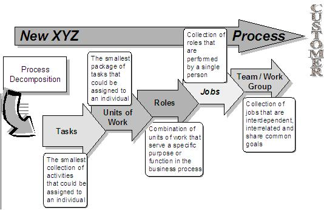
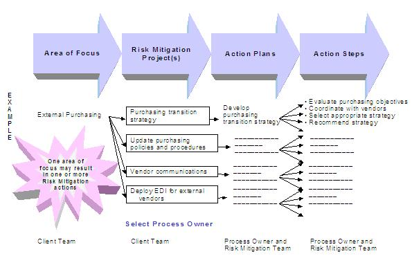

1 Description
The purpose of this technique paper is to provide high-level guidance in the development and delivery of a Transition
Management program. Transition Management involves establishing and carrying out a combination of practices and
prescriptive actions that enable change agents to effectively lead, manage, and influence the transition of the
organization from the current state to the desired state.
Effective transition management is knowing what is required to achieve a smooth transition and deploying the right
actions, at the right time, to position a smooth transition and to maintain its required pace. This is achieved by
gaining sufficient understanding of key opportunities/problems (impediments) to a smooth transition, dispatching best
tactics and tools to capitalize on opportunities and/or to prevent or quickly resolve problems, and monitoring progress
and taking appropriate follow-on action to ensure that adequate and sufficient transition momentum and required pace is
maintained.
The Transition Management plan summarizes the overall approach that a client will take when addressing the change that
the organization must go through in order to achieve the full benefits of the Enterprise Resource Planning. The plan
should provide the direction necessary for identifying the risks to the implementation, its effect on the people,
processes and technology, and for scheduling and tracking the mitigation strategies identified for addressing the areas
of focus and transitioning the organization from its current state to its desired state.
2 Context
The purpose of the transition plan is to enable successful transformation by:
-
Identifying the changes that are needed, and recommend the most effective approach to implementing the desired
business solutions.
-
Reducing the depth and duration of disruption to the business by imposing consistency and direction.
-
Facilitating acceptance by ensuring that the transition is well thought out by both the client and the consulting
team, and that critical success factors are in place.
Key components of transition management are:
-
Executive Visioning
-
Plan Management
-
Communications
-
Training Strategy
-
Job / Organization Realignment
-
Risk Mitigation
Related Work-Products
The list of work-products related to Transition Management could include:
Input Work-Products
-
ENG 343 Project Definition
-
BUS 323 Strategic Direction
-
ORG 301 Organization Readiness Assessment
Output Work-Products
-
ORG 110 Communication Plan
-
ORG 300 Change Leadership Plan
-
ORG 302 Integrated Transition Plan
-
ORG 304 Stakeholder Participation Management Plan
-
ORG 312 Education and Training Strategy
-
ORG 314 Organization Transition Plan
3 Steps
1. Executive Visioning
Introduction
One of the earliest activities that should be completed in an engagement is executive visioning / strategic
positioning. Through Executive Visioning, the company vision and long-term strategy are validated and the
project mission, compelling need for change, critical success factors, and key performance indicators are
defined.
In addition, the organization change methodology is communicated. By becoming change agents and sponsors for the
change, the executives legitimize the change, provide a clear vision of what must occur and demonstrate the
organizational commitment necessary to successfully execute and complete the transition.
Objectives
-
Validate the company vision and long term strategy
-
Identify the project mission, compelling need for change, critical success factors, and key performance indicators
-
Validate the organization’s commitment to using Enterprise Resource Planning (ERP) as an enabling tool
-
Align the ERP project to support the long term vision and goals of the organization
-
Educate the executive team on the IBM organization change methodology
Approach
Executive Visioning consists of a series of executive interviews followed by an executive visioning workshop. The
executive visioning activities should occur as early in the engagement as possible and must be completed prior to the
creation of the To-Be process models.
1. Review existing documentation
-
Vision, Mission, and Goals
-
Strategic plan (including competitive analysis, marketing plan, growth and financial projections)
-
Business Case created during the Package selection process
-
Company communications involving these dimensions
2. Interview Key Executives – this activity should take no more than one hour per executive. The interviews should
focus on topics such as: (refer to the Examples section for an example)
-
What are the critical initiatives that will give your company the highest value in the next 18-24 months?
-
What are reasonable goals to accomplish with these critical initiatives?
-
From a timing standpoint, which initiatives should be done together or separately? Why?
-
What kind of project discipline should be enforced to ensure we meet our deadlines and budgets?
-
To what degree do you want to engage and energize the work force versus simply informing them of their new
requirements?
-
What is your expectation for building skills and knowledge in the work force?
-
What are your priorities concerning communication with the work force? Do you have any preferred media? How much
will you be involved in communications?
-
What kind of program would you like to see early on? Where can we deliver quick wins?
-
How much of your personal time will you devote to leading or managing specific initiatives? Do you believe this
will be adequate for convincing the organization that these are critical?
-
What are your priorities in the areas of:
-
Temporary productivity losses (due to training, learning curve, etc.) and means to recover (e.g., staggered
training and implementations, temporary workers, overtime)
-
Need for simultaneous move to the new requirements across functions and geographies ("efficient"
implementation) versus consideration of local requirements and need to continue with "regular work" (phased
or staggered implementation)
3. Facilitate Executive Visioning Workshop – this activity will take approximately 3 hours and should be attended by
the executives of the organization and the IBM Project Manager. The workshop contents include:
-
An overview of the Organization Change Management Methodology
-
A summary of the interviews
-
Confirmation of the organization’s vision, objectives, and goals
-
Definition of project expectations (mission, key performance indicators and metrics, and critical success factors)
4. Analyze the Workshop Output – Review the results from the workshop and consolidate the results. Begin to formulate a
Transition Management Plan for the organization.
5. Communicate the Results
-
Executive Team – Create a summary document identifying the outputs of the visioning workshop and obtain sign-off.
The summary should include:
-
The refined vision, mission and goals statement
-
Critical success factors
-
Key performance measures and metrics
-
Project team – Communicate the results of the visioning workshop and update the project charter
-
Organization – include results in communications plan
2. Plan Management
Introduction
The Transition Management plan contains specific tools and technique papers, which comprise a comprehensive package for
addressing the change that the organization must go through in order to achieve the full benefits of the Enterprise
Resource Package. These documents must be reviewed at the project inception and modified as needed to meet the specific
requirements of the client. Specific modifications may be made for language and cultural considerations. The plan
should be an integral part of the overall project plan, linking transition management activities with project
milestones.
Approach
1. Identify all project implementation activities planned within the client organization and gather work plans
-
Work with the client executives to identify all of the change initiatives that are running concurrently. It may be
necessary to interview a number of team members to accurately understand all that the organization is undertaking.
-
Contact the project manager or engagement manager of each of the change initiatives and request their work plans or
project plans with as much detail as possible. These work plans or project plans may be in all different formats
and have different levels of detail, so it may be necessary to convert the information and work with them to get
the level of detail you need.
-
Once you have gathered the data and before you begin prioritizing, do a quality check with the executive sponsor(s)
for completeness and redundancy.
-
Prioritize the initiatives and discuss with the client sponsor the criteria he or she would use for importance,
readiness, etc. Some possible prioritization/grouping criteria might be:
-
Human resource requirements
-
Paybacks or rewards
-
Out-of-pocket cost
-
Change impact
2. Produce a consolidated Transition Plan
Using Microsoft Project, or the software the client requests, combine the entire project or work plans into one
integrated plan. The first step is simply to convert many work plans or project plans into a single plan.
Interdependencies between the deployment team, training team and OCM team should be identified and coordinated.
3. Identify Potential Conflicts
Once the information is combined into one document, look to see if there are any conflicts in the integrated plans. It
is likely there will be conflicts because often project managers within one domain do not realize that they affect
other areas. Examples of areas of conflict are:
-
Two projects using the same resources
-
One area in the organization having too many initiatives taking place at one time
-
Shared kick-off dates
-
Shared milestones and or completion dates
Flag these conflicts and identify possibly resolutions. Use client judgment to help ascertain assimilation risks or
ability to assimilate the proposed changes in the respective organizations or departments. If gridlock cannot be
avoided, then you must adjust the approaches and plan.
Involve the client executive sponsor(s) in this step as much as possible.
4. Recommend Integrated Transition Plan
Meet with the executive sponsor(s) of the overall program and make your recommendations for the integrated transition
plan, including the proposed resolution of conflicts. The executive sponsors must agree on the scheduling changes. Once
you have gotten the approval of the sponsors, communicate the changes to the project managers and engagement managers.
Make sure you explain the rationale behind every change and make sure you have the complete backing of the executive
sponsor(s).
5. Feedback Mechanisms and Performance Measures
The plan should also identify performance measures and feedback mechanisms for evaluating the success of the plan.
“Where are we going?” “How are we going to get there?” “How do we know when we’ve arrived?”
-
Communications should be two-way to encourage feedback. This feature should be incorporated into the communication
plan and monitored for effectiveness.
-
Change Readiness Events can bolster sagging momentum and provide a non-threatening forum for feedback. These should
also be included in the communications plan.
-
Accountability mechanisms must be designed for the owners of the risk mitigation strategies. The strategy owners
will also need support in enlisting cooperation from team members in providing timely information, workshop
participation etc.
-
Issue resolution support must also be provided through timely updates to the plan, regular meetings to drive
resolution activities. All issues must become part of the implementation issue resolution plan.
-
Performance measures must be defined early on. This provides both a goal, a measurement for determining the success
in reaching the goal and oftentimes an incentive for reaching or surpassing the goal.
6. Validation and Verification
The Integrated Transition plan is validated through:
-
Agreement of the plan with program and project management
-
Initial review with senior management and key business stakeholders
-
Regular review of progress and revisions to the plan by the OCM Dealer Lead
-
Periodic reviews of progress with the Client senior management team
3. Communications
Introduction
The first interaction that many employees will have with the implementation project is through communications regarding
the project. It is important that these messages be consistent, accurate and positive. Effective communications are
built upon a solid foundation that will provide consistency throughout the project. There are two elements of a
Communication Program: the Communication Strategy and the Communication Plan. The Communication Strategy
defines the overall approach to communications within the client organization in terms of lasting principles and
approaches to be used throughout the implementation. The Communication Plan is a template detailing the steps required
for execution of the Communication Strategy. The elements of the plan may be tailored to the communication requirements
of each specific location and are planned and managed in the same manner as other elements of the project.
Approach
Using information gathered through the Organization Readiness Assessment and executive visioning, the Communication
Strategy is prepared as the first stage in the communication process because it is used to define the overall
principles, audiences, campaigns, and media. If carefully prepared, these elements should remain relatively stable
during the communication process.
The next step in developing an effective communication program is to develop the Communication Plan. The Communication
Plan is the document used to direct the actual preparation and delivery of communication materials. It defines the
specific communications to be prepared and delivered, the timing and budget for each communication and the
identification of specific campaigns.
The communication plan will be modified at various points throughout the project. These changes are based on results
achieved from change management workshops that are concerned with issues surrounding the implementation. Specifically,
results from the Risk Mitigation activities should be filtered back to the Transition Management Plan. Depending on the
mitigation strategy chosen for the area of focus, modify the communication plan as needed. These modifications might
take into consideration completely new issues or may reflect a change in perspective for a previously identified issue.
Communications that are sent out regarding these issues will need to be created or modified, as the case may be.
4. Training Strategy
Introduction
To facilitate the job/role changes that occur with the redesign of a business process an effective training program is
essential. Training is the process through which skills are developed, information is provided and attitudes are
nurtured to help individuals more effectively and efficiently fulfill the roles they are called upon to play in the
workplace. The key objectives of training process are to:
-
Assist the organization in obtaining its goals
-
Provide general employee enrichment
-
Enable the enhancement and transformation of roles to add value to the enterprise
-
Facilitate and maximize learning.
Approach
The Training Strategy is developed during the initial phases of the project and is a key enabler to successful
deployment of an ERP system. Successful change in an organization will depend on how well staff and management are
equipped to operate in a new environment. The degree to which your organization can quickly adapt to the new
environment will depend on the quality of the training program. (Refer to the Training Strategy Definition
Technique Paper for additional information).
There are 10 key elements that make up a comprehensive ERP Training Strategy:
1. Roles Analysis
The process definition workshops will define the roles and responsibilities necessary to support the processes. Through
a roles analysis, the current roles are mapped to future roles and the gaps in the skill base identified. This will
determine the training road map and curriculum.
2. End User Training Needs Assessment
Based on the roles analysis (if completed), the future system and organization design, and any other existing
documentation, the training needs of the Participant base should become clearer. Minimally, there should be an estimate
for the number of people to be trained per functional area and their current skill levels. Also known may be the Key
Performance Indicators. Based on this information a discussion on prerequisite training, functional training, and
ongoing training should take place.
3. Education and Training Delivery Strategy
Based on the participant training needs, a variety of delivery methods may be evaluated. For example, Navigation
Training may be provided by a CBT (Computer Based Training) while functional training may be ILT (Instructor Lead
Training). The client may want to pursue Web Based Training, Distance Learning, or a variety of delivery methods. Each
of these should be discussed and, based on the discussion, additional information with regard to IT infrastructure may
be needed before an informed decision can be made. Clients may initially choose a delivery method that greatly depends
on technology and, once they analyze their current IT Infrastructure, may decide the cost to support the delivery
method does not outweigh the benefit.
4. Material Development Strategy
The material development strategy will be based on the type of delivery method chosen. What are the components of
delivery? Will it include policies, procedures, exercises, and user support? What are the data load requirements? Will
the end-user be given a manual or will the information be provided on-line via the web. Will the current IT
infrastructure support development in-house?
5. Document Maintenance Strategy
Maintaining the performance support tools after implementation is a large task and often underestimated. Part of the
training strategy should include plans for maintaining the courseware, online help, job aids, etc.
6. IT Infrastructure Assessment
There are two training-related components of the IT Infrastructure. The first relates to the training instance, which
is the actual box that is used to store master data and transaction data for use in classes. The second is related to
the delivery methods. To deliver training using CBT, WBT, or Distance Learning, for example, the client must have or be
willing to invest in adequate IT infrastructure. Generally, the IT team has prepared for a training instance in their
IT assessment, but typically has not reviewed the infrastructure from a delivery method capability viewpoint.
7. Education and Training Evaluation Strategy
Conducting an education and training evaluation can measure development and delivery effectiveness. Normally the
evaluation strategy is divided into two components, the formative evaluation and the summative evaluation. The
formative evaluation is used to improve training course effectiveness and is conducted during courseware development.
The summative evaluation is conducted after the courses have been delivered and is used to evaluate the effectiveness
of training.
8. User Support System (courseware, online help, job aids, etc.)
The ultimate goal of the training is to enable the participants to perform their jobs as efficiently as possible and,
in so doing, meet the established Key Performance Indicators. Performance support includes courseware, training, and
the tools used to enhance performance, such as on-line help and job aids.
9. Communication Strategy (incorporated into overall communication plan)
In most cases, a communications strategy has been previously planned. At this point, it is important to review and
update the communication plan based on the outcome of the training strategy.
10. Resource Planning and Staffing
It is important to determine who will deliver the end user training and how they will gain the background knowledge to
deliver quality training.
Whenever possible, we recommend that the client deliver the training and the consultant provide support in an effort to
transfer knowledge to the client leads and make them self-sufficient. The following items should be discussed during
the high-level strategy:
- Resource needs and availability
- Pros and cons of resource mix
- Train the Trainer (Adult Learning Principals, system knowledge, process knowledge, etc.)
- Who will deliver ongoing training?
5. Job / Organization Realignment
Introduction
An element of managing the change that an organization faces when implementing an ERP system is to align the People,
Processes and Technology to take the organization from its current state to the desired state.
The Organization Transition Plan details how to implement the structural, behavioral, and enabling characteristics of
the proposed organization changes. The deployment team will work with the client’s Human Resource (HR) organization to
set parameters for actions needed to support the new organization structure and job designs. The organization redesign
is likely to require staffing changes to at least some degree. The client’s HR organization should become involved to
ensure that the new organization would have the workforce it needs. The client’s HR policy and practice will bound
these activities.
There is an axiom that states:
New Process + New System + Old Jobs = Expensive Old Process.
By addressing job design within the transition plan, value for the Business, Management team and Employees is created.
Involving the managers, HR department and the affected employees in either creating or validating the “to be” job
design models will help facilitate buy-in to the new business model. It is also beneficial from a management
perspective for the client leadership team to take a look at this effort from an integrated approach. The
cross-departmental implications that arise must be identified as additional areas of focus. The resulting risk
mitigation strategies will require additional updates to the transition plan. The job design activities primarily take
place in the blueprint phase. This allows for the implementation team to identify business process changes and new
processes. This also allows sufficient time to complete the required mitigation activities prior to “go-live”.
Approach
1. Understand the current organization. This includes the behavioral, structural and enabling elements across the
organization as a whole, within the group or department, and at the individual level.
2. Define new / changed process roles, responsibilities and key organizational enablers. This may be accomplished using
a tool such as the RACI matrix.
3. Determine new / changed job descriptions and performance measurements. Do job descriptions exist that need to be
updated? Do performance measures need to be changed based on responsibility changes?

4. Map people to roles / jobs. Work with HR to set parameters for actions needed to support any new organization
structure and job designs. The organization redesign is likely to require staffing changes to at least some degree.
Human resources should become involved to ensure that the new organization will have the workforce it needs.
5. Conduct gap analysis. Identify the primary differences between the current process roles, responsibilities and
resource requirements and those of the future state. Document those differences for transition, communications and
training requirements as well as the potential shifts in existing job descriptions, target resource requirements and
changes in performance measurements.
6. Align organization structure as needed, document job descriptions and determine transition activities. Finalize any
changes to the organization structure and document changes to existing job descriptions and create new job
descriptions. Plan for the incorporation of the new roles/jobs into the current organization structure and for the
transition of the changes roles/jobs.
7. Complete the organization transition plan
-
Process changes communicated
-
Job changes communicated
-
New roles accepted
-
Go-live Support in place
6. Risk Mitigation
Introduction
Any business initiative involving an ERP implementation will confront potential obstacles to success, referred to as
Areas of Focus. It is important to address these topics early to minimize their negative effects. Areas of Focus are
major business impact areas that pose the greatest risks when implementing an ERP package. These are traditionally
areas that include brand new or significantly changing business processes, policies, procedures and technology required
to meet business objectives and support the new system. Major changes in job roles and/or organizational structure may
also impact the business and can become risk factors.
Risk Mitigation planning and execution will provide the detailed plans that address organizational impacts, business
processes, and new policies or procedures that must be in place prior to implementation. An area of focus usually
breaks down into 3 - 5 risk mitigation projects that are staffed by client personnel and are supported by the
Organization Change Management (OCM) team.
(Refer to the Risk Mitigation Technique Paper for additional information)
Approach
1. An initial list of risks or areas of focus is developed based on results of the Organization Readiness Assessment
(ORA) and executive visioning. These items are entered into the AOF_Template and sorted by functional area. (Refer to
the Tools section for an example)
2. Business Impact Workshops (BIW) are held for each process or sub-process affected by the implementation after the
project team has held the design meetings and have developed more detailed information regarding the business processes
and the technology needed to support the project. The client Organization Change Management (OCM) lead, process owners
and representatives from the affected functional groups work with the OCM Lead consultant to review the initial list of
risks, identify additional risks or areas of focus, and determine the level of impact and level of focus for each item.
A suggested risk mitigation strategy is also identified for each. The worksheet that is produced as a result of the BIW
will assist the client in organizing the change activities required for a successful implementation.
3. A plan for addressing the areas of focus is developed and incorporated into the overall project plan. The method by
which each AOF is addressed will vary depending on the type of risk. Some AOFs may be resolved through a series of
workshops that identify a change to the process. This type of mitigation may require nothing more than communication
across several functional teams. Others may require programming skills for developing interfaces or reports.

|